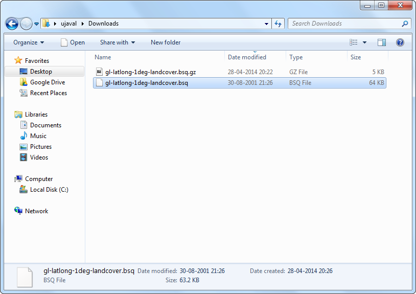
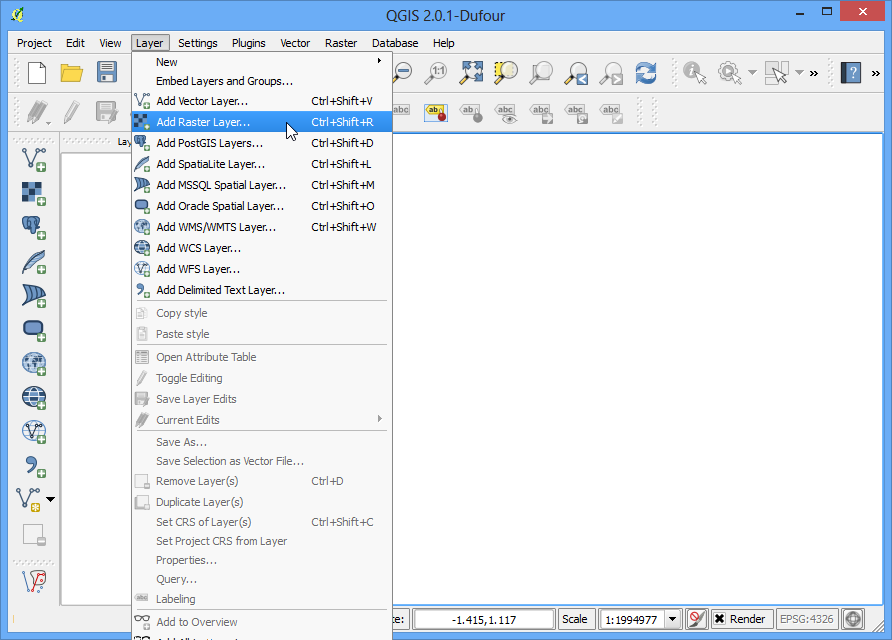
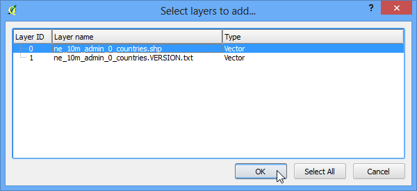
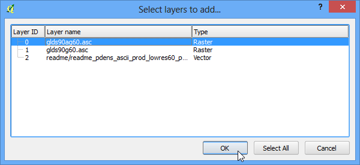
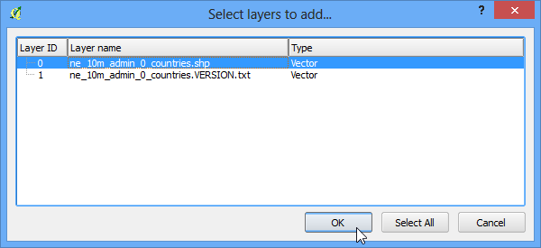
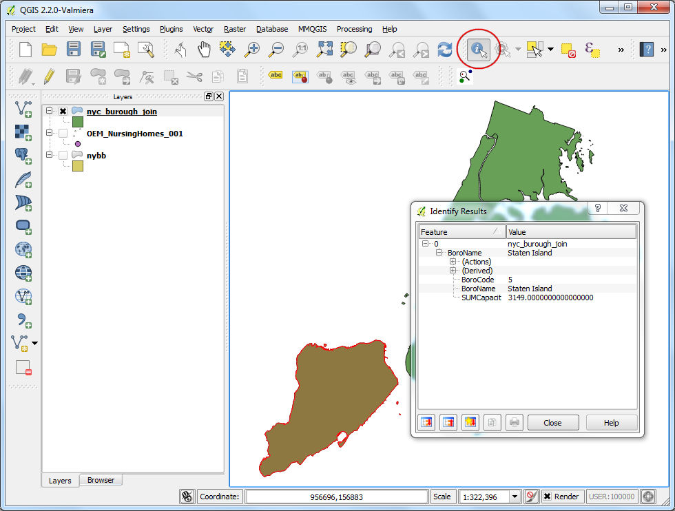

Using Plugins¶
Plugins in QGIS add useful features to the software. Plugins are written by QGIS developers and other independent users who want to extend the core functionality of the software. These plugins are made available in QGIS for all the users.
Overview of the task¶
In this tutorial, you will learn how to enable Core Plugins as well as download and install External Plugins. You will also learn how to locate the plugin from the QGIS menu once they are installed.
Procedure¶
Core Plugins¶
Core plugins are already part of the standard QGIS installation. To use these, you just need to enable them.
- Open QGIS. Click on Plugins ‣ Manage and Install Plugins.... to open the Plugin Manager dialog.

- Even if this is your first time using QGIS, you will see a lot of plugins listed under the Installed tab. This is because they are Core Plugins and were installed during QGIS installation.

- Let’s enable one of the plugins. Check on the checkbox next to Spatial Query Plugin. This will enable the plugin and you will be able to use it. One thing to note is that plugins have the ability to insert menu items at various locations and create new panels and toolbars. Sometimes it is difficult to know how to find the newly enabled tools. Once clue is to look in the plugin discription. Here the description says Category: Vector. That indicates that the plugin would be found under the Vector menu once enabled. Click Close.

- Now that the Spatial Query Plugin is enabled, you can go to the Vector ‣ Spatial Query to use the functionality added by the plugin.

External Plugins¶
External plugins are available in the QGIS Plugins Repository and need to be installed by the users before using them. An easy way to browse and install these plugins is by using the Plugin Manager tool.
- Open QGIS. Click on Plugins ‣ Manage and Install Plugins.... to open the Plugin Manager dialog.

- Click on Get more tab. Here you will see a list of plugins listed.

- For this tutorial, let’s find and install a plugin called ‘QuickQKT’. As you start typing qui in the search box, you will see the search results below. Click on the QuickWKT. Next, click on Install plugin button to install it.

- Once the plugin is downloaded and installed, you will see a confirmation dialog.

- If you noticed, there was no mention of the plugin category in the description. That makes it hard to determine how to access the newly installed plugin. Most external plugins are installed under the Plugins menu itself in QGIS. Click on Plugins ‣ QuickWKT and you will see the newly installed plugin. Usually, external plugins also install a button in the Plugins toolbar also. You may also use that button to access the plugin.

Experimental Plugins¶
Now you know how to install and find an External Plugin in QGIS. Let’s explore some advanced options. Sometimes you are looking for a specific plugin, but cannot find it in the Get more tab. It maybe because the plugin is marked Experimental. Here is how to install experimental plugins.
- Open Plugin Manager by Plugins ‣ Manage and Install Plugins.... Click on the Settings tab. You will see an option called Show also experimental plugins. Click the checkbox next to it, to enable it.

- You will see a new tab called New. The newly enabled experimental plugins will show up here.
Note
The New tab will appear only temporarily once you enable the experimental plugins. The next time you open Plugin Manager, the experimental plugins will show alongside regular plugins in the Get more tab.

- Let’s install a plugin called TimeManager. Click on the plugin name and then Click Install.

- Now when you come back to the main QGIS window, you will see a new Panel at the bottom of the canvas. This panel is created by the TimeManager plugin. This yet another way of plugins to add useful functionality to the user interfac .

- You can enable/disable this panel from View ‣ Panels ‣ Time Manager.
